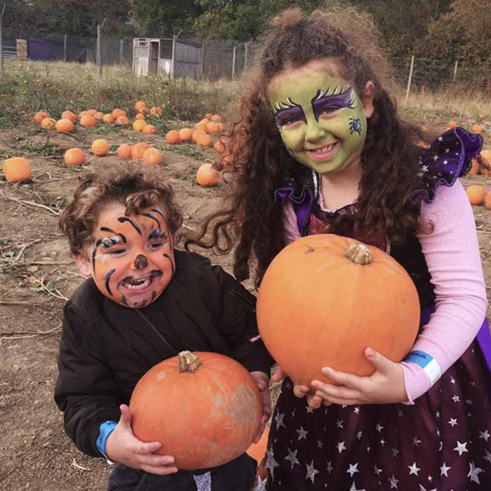

Seasonal Activities News & Info
Thoughout the year, we organise extra special events for all to enjoy. The most common ones are our Midsummer Carnival, our Big Easter Hunt, our Spooky Halloween Extravaganza, and our Santa's Grotto at Christmas time.
See below for some of our previous events, and pictures.
With our Halloween event just past, we are now taking bookings for our Christmas special. It will run for 4 weeks, from Monday 11th December 2023 until Sunday 7th January 2024 inclusive.
Activities include Santa's Grotto, Raindeer Treks, festive dressing up, and special products for sale, including Christmas Trees, hand-made decorations and toys.
Make sure you check out our special Christmas Menu in our Cafe too!
Midsummer Carnival
Our Midsummer was celebrated with a full blown carnival! The rides and stalls were run by The Showmen's Guild of Great Britain
We had lots of fun rides and attractions, to suit all ages of children and adults. We also had street food, and our favourite sweet treats: Popcorn and Candy Floss.
Easter (Spring) Break
Over the Spring Break fortnight, we put on events to entertain the kids.
We had an egg event, where eggs were painted in our non-toxic paints, before being rolled down a hill in an "egg-race", with participants recieving hand-made chocolate Easter Eggs.
We also had a great Easter Egg Hunt, where the children hunted for stone ornamental eggs, which got traded for chocolate treats.
Christmas Festive Break
Over the Christmas Break last year, we had a ton of fun. Our Santa's Grotto was our most popular attraction, but our Raindeer pulling the sleigh was a close second.
We also had a mini-disco event for the children, and our shop stocked some festive-special only items such as hand-made crackers, and beautifully decorated Christmas Tree ornaments.
Halloween
On the weekend before Halloween, Saturday 28th and Sunday 29th October, we had a spooky Halloween Event.
Everyone was encouraged to dress-up (even Fluffy the rabbit, as seen in the photo above), and we seen some fantastic costumes - a great effort was made by all!
Other events we had were pumpkin picking and carving, and also in good old fashion Scottish tradition, some even carved turnips. We also had apple-dooking, and a mini-disco too.